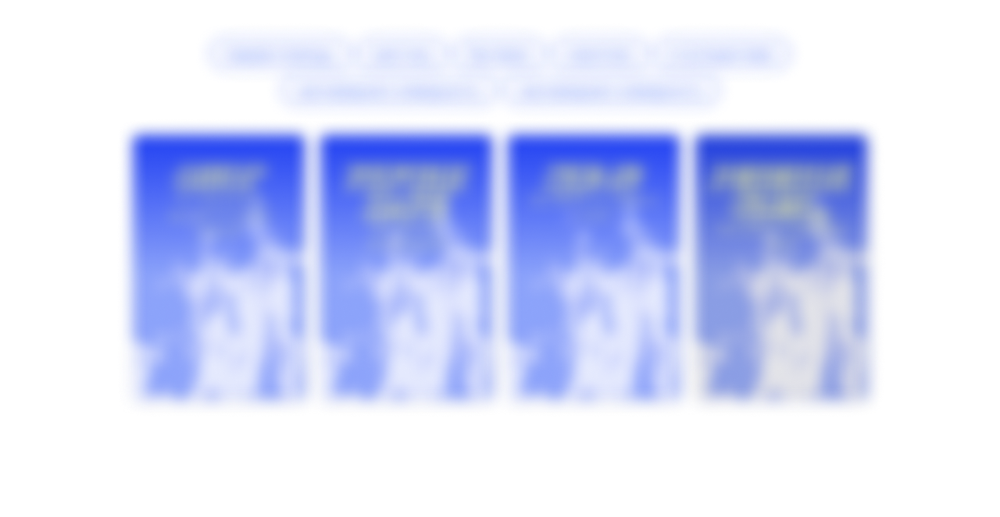

- 1. Охладить место ожога холодной водой, не использовать лёд.
- 2. Снять украшения, не повреждая кожу. Если они прилипли, не трогать.
- 3. Сохранять целостность пузырей.
- 4. Наложить защитную повязку из чистой ткани.
- 5. Защитить пострадавшего от ветра или дождя.
- 1. Вызвать скорую.
- 2. После охлаждения наложить влажную повязку.